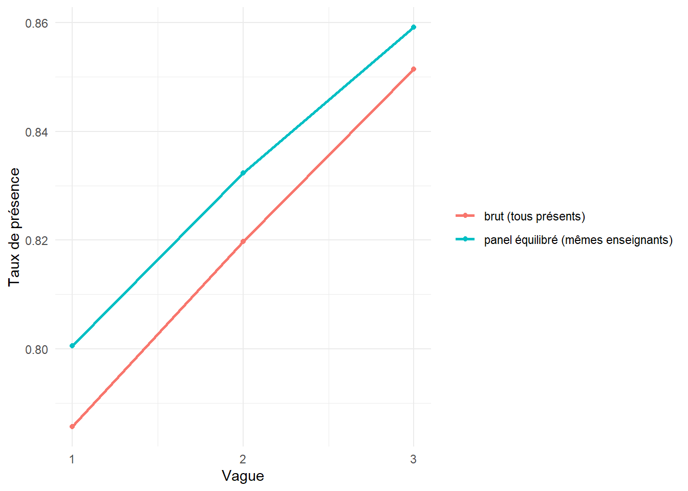

library(dplyr)
library(tidyr)
library(readr)
library(stringr)
library(ggplot2)
library(lme4)
library(knitr)Série Sénégal — Volet 3 : présence effective des enseignants
De trois vagues « sales » à un panel : nettoyage, appariement d’entités, inférence longitudinale
R
longitudinal
panel
data-cleaning
entity-resolution
GLMM
education
Senegal
Troisième volet analytique. À partir de la propension de présence latente du socle, il simule trois campagnes de visites inopinées volontairement bruitées (dérive de format des identifiants, coquilles, codages hétérogènes, manquants, doublons, attrition et entrées), puis reconstitue un panel : normalisation et appariement d’entités à deux niveaux (exact puis clé composite, cas uniques seulement), diagnostic d’attrition différentielle, indicateurs de la vague 3 et de la série des trois vagues, et modèle longitudinal (GLMM binomial à sur-dispersion) distinguant l’amélioration intra-enseignant de l’artefact de composition. Code densément annoté ; chaque résultat est suivi d’une lecture interprétative. 100 % R.
1 Compréhension du volet
Mesurer la présence effective des enseignants suppose des visites inopinées répétées : on ne « déclare » pas sa présence, on la constate. Trois vagues successives permettent de suivre une trajectoire — mais trois collectes de terrain arrivent toujours avec leur lot de désordre : des identifiants qui changent de format d’une année à l’autre, des saisies fautives, des codages différents, des agents qui partent ou arrivent. La difficulté du volet n’est pas l’analyse finale, elle est en amont : reconstituer un panel fiable à partir de sources hétérogènes, puis en tirer une inférence qui ne confonde pas trois choses distinctes — la présence nationale monte, chaque enseignant devient plus présent, et les plus absents sont partis. Séparer ces trois lectures est précisément la valeur ajoutée du panel.
params <- list(
n_visites = 4L, # unannounced visits per teacher per wave
# --- differentiated time trend (the signal we inject, then recover) --------
delta_wave = 0.15, # per-wave improvement in presence (logit scale)
gamma_reform = 0.30, # EXTRA per-wave improvement in reformed IA
sigma_od = 0.50, # teacher×wave noise on the logit => genuine OVERDISPERSION
# --- differential attrition + entries (=> unbalanced panel) ----------------
attr_base = -2.0, # baseline log-odds of leaving after a wave (~12%)
attr_slope = 0.60, # the more ABSENT in a wave, the more likely to leave
entry_rate = 0.08, # new entrants per wave (share of current roster)
# --- data-entry messiness --------------------------------------------------
typo_rate = 0.10, # share of IDs corrupted beyond simple normalisation
p_missing = 0.03, # share of individual visit cells missing
p_dup = 0.02, # share of rows accidentally duplicated
seed = 53L,
dir = "files/projet_50"
)2 Génération des trois vagues (données observées à partir de la latente)
Le socle fournit attendance_prop (propension de présence de chaque enseignant). On en tire des comptes de présence sur 4 visites, avec une tendance qui progresse au fil des vagues et davantage dans les IA réformées — l’effet qu’on cherchera ensuite à récupérer. On ajoute un bruit enseignant×vague sur l’échelle logit : c’est une sur-dispersion réelle (les visites d’un même enseignant ne sont pas des tirages parfaitement indépendants), qu’il faudra modéliser honnêtement.
# Draw a n×4 matrix of 0/1 visit outcomes for a set of teachers in wave w.
# The logit of presence = latent propensity + wave trend + reform×wave boost +
# a teacher×wave disturbance (this last term is what creates OVERDISPERSION:
# without it, 4 visits would be exactly Binomial and SEs would be too small).
draw_visits <- function(df, w) {
eta <- qlogis(pmin(pmax(df$attendance_prop, 0.01), 0.99)) +
params$delta_wave * (w - 1) +
params$gamma_reform * (w - 1) * df$reform +
rnorm(nrow(df), 0, params$sigma_od)
p <- plogis(eta)
V <- vapply(seq_len(params$n_visites),
function(v) rbinom(nrow(df), 1L, p), integer(nrow(df)))
# Missing visits: some scheduled visits simply were not carried out.
miss <- matrix(runif(length(V)) < params$p_missing, nrow = nrow(V))
V[miss] <- NA_integer_
V
}
# Each wave records presence with a DIFFERENT coding convention — the kind of
# heterogeneity that breaks a naive rbind and forces explicit harmonisation.
code_visit <- function(x, wave) {
if (wave == 1) dplyr::case_when(is.na(x) ~ NA_character_, x == 1 ~ "présent", TRUE ~ "absent")
else if (wave == 2) dplyr::case_when(is.na(x) ~ "ND", x == 1 ~ "P", TRUE ~ "A")
else dplyr::case_when(is.na(x) ~ NA_character_, x == 1 ~ "1", TRUE ~ "0")
}
# IDs drift in FORMAT across waves (a real headache): the same teacher T000123
# appears as "123" then "T-000123". Normalisation (strip non-digits) will fix
# this — EXCEPT for a fraction of genuine typos (dropped/altered digit) that
# survive normalisation and must be resolved by other means (fallback matching).
drift_id <- function(true_id, wave) {
digits <- str_remove(true_id, "^T") # "000123"
base <- switch(as.character(wave),
"1" = true_id, # T000123 (canonical)
"2" = as.character(as.integer(digits)), # 123 (leading zeros dropped)
"3" = paste0("T-", digits)) # T-000123
base
}
inject_typos <- function(ids) {
hit <- runif(length(ids)) < params$typo_rate
ids[hit] <- vapply(ids[hit], function(s) {
pos <- sample(nchar(s), 1)
substr(s, pos, pos) <- sample(c("0","1","2","3","4","5","6","7","8","9"), 1)
s # a changed digit => breaks exact match
}, character(1))
ids
}set.seed(params$seed)
ecoles <- read_csv(file.path(params$dir, "ecoles.csv"), show_col_types = FALSE)
ia <- read_csv(file.path(params$dir, "ia.csv"), show_col_types = FALSE)
mst <- read_csv(file.path(params$dir, "enseignants.csv"), show_col_types = FALSE) |>
left_join(select(ia, ia_id, reform, g_ia), by = "ia_id")
# Manufacture new entrants (fresh identities appearing from a given wave on).
make_entrants <- function(n, id_start) {
tibble(enseignant_id = sprintf("T9%05d", id_start + seq_len(n))) |> # 9xxxxx = entrant namespace
mutate(ecole_id = sample(ecoles$ecole_id, n, replace = TRUE)) |>
left_join(select(ecoles, ecole_id, ief_id, ia_id, milieu), by = "ecole_id") |>
left_join(select(ia, ia_id, reform, g_ia), by = "ia_id") |>
mutate(genre = if_else(runif(n) < 0.6, "H", "F"),
statut = if_else(runif(n) < 0.5, "fonctionnaire", "contractuel"),
anciennete = pmax(0L, round(rnorm(n, 3, 2))),
attendance_prop = plogis(rnorm(n, 1.2, 0.6)))
}
# --- Wave 1: the full master roster --------------------------------------
V1 <- draw_visits(mst, 1)
pres1 <- rowSums(V1, na.rm = TRUE) # present visits (drives attrition)
mst$pres1 <- pres1
# Differential attrition: teachers who were MORE ABSENT are MORE likely to leave.
p_leave1 <- plogis(params$attr_base + params$attr_slope * (2 - pres1))
leave1 <- runif(nrow(mst)) < p_leave1
w1 <- mst
# --- Wave 2: survivors + entrants ----------------------------------------
surv2 <- mst[!leave1, ]
ent2 <- make_entrants(round(params$entry_rate * nrow(surv2)), 0)
w2src <- bind_rows(select(surv2, names(ent2)), ent2)
V2 <- draw_visits(w2src, 2)
pres2 <- rowSums(V2, na.rm = TRUE)
# --- Wave 3: survivors of wave 2 (differential again) + entrants ----------
p_leave2 <- plogis(params$attr_base + params$attr_slope * (2 - pres2))
surv3 <- w2src[runif(nrow(w2src)) >= p_leave2, ]
ent3 <- make_entrants(round(params$entry_rate * nrow(surv3)), 100000)
w3src <- bind_rows(select(surv3, names(ent3)), ent3)
V3 <- draw_visits(w3src, 3)
cat(sprintf("Effectifs par vague : V1=%d, V2=%d, V3=%d\n",
nrow(w1), nrow(w2src), nrow(w3src)))Effectifs par vague : V1=15739, V2=15702, V3=15727# Assemble one messy wave file: drifting/typo'd display ID, heterogeneous gender
# coding, coded visit columns, then inject duplicate rows. NOTE we keep the true
# id in a SEPARATE truth table (never written) so we can later AUDIT the matching
# accuracy — a luxury of simulation that stands in for a hand-labelled sample.
build_wave <- function(src, V, wave) {
disp <- inject_typos(vapply(src$enseignant_id, drift_id, character(1), wave = wave))
genre_coded <- switch(as.character(wave),
"1" = src$genre, # F / H
"2" = if_else(src$genre == "F", "Femme", "Homme"), # Femme / Homme
"3" = if_else(src$genre == "F", "1", "2")) # 1 / 2
df <- tibble(
id_saisi = disp,
ecole_id = src$ecole_id,
genre_saisi = genre_coded,
anciennete = src$anciennete,
vague = wave)
for (v in seq_len(params$n_visites))
df[[paste0("visite", v)]] <- code_visit(V[, v], wave)
# accidental duplicates
dup <- df[runif(nrow(df)) < params$p_dup, , drop = FALSE]
df <- bind_rows(df, dup)
truth <- tibble(row = seq_len(nrow(df)),
true_id = c(src$enseignant_id, src$enseignant_id[match(dup$id_saisi, disp)]))
list(data = df, truth = truth)
}
b1 <- build_wave(w1, V1, 1); b2 <- build_wave(w2src, V2, 2); b3 <- build_wave(w3src, V3, 3)
write_csv(b1$data, file.path(params$dir, "vague1.csv"))
write_csv(b2$data, file.path(params$dir, "vague2.csv"))
write_csv(b3$data, file.path(params$dir, "vague3.csv"))
cat("Trois vagues écrites (avec doublons, coquilles, codages hétérogènes).\n")Trois vagues écrites (avec doublons, coquilles, codages hétérogènes).3 Diagnostic et nettoyage
On relit les trois fichiers comme s’ils étaient externes et on les met en forme : dédoublonnage, harmonisation des codages (présence et genre), reconstruction du compte de présence sur le nombre de visites réellement effectuées (dénominateur variable — ignorer les visites manquantes fausserait le taux).
# One robust decoder that accepts every wave's presence vocabulary at once.
decode_visit <- function(x) dplyr::case_when(
x %in% c("présent", "Présent", "P", "1", "oui") ~ 1L,
x %in% c("absent", "Absent", "A", "0", "non") ~ 0L,
TRUE ~ NA_integer_) # "ND", "", NA -> missing
# Harmonise the three gender vocabularies into a single canonical one.
decode_genre <- function(x) dplyr::case_when(
x %in% c("F", "Femme", "1") ~ "F",
x %in% c("H", "Homme", "2") ~ "H",
TRUE ~ NA_character_)
clean_wave <- function(path) {
raw <- read_csv(path, show_col_types = FALSE)
raw |>
distinct() |> # drop exact duplicate rows
mutate(genre = decode_genre(genre_saisi),
across(starts_with("visite"), decode_visit)) |>
rowwise() |>
mutate(present = sum(c_across(starts_with("visite")), na.rm = TRUE),
n_valid = sum(!is.na(c_across(starts_with("visite"))))) |>
ungroup() |>
filter(n_valid > 0) |> # a row with no valid visit is uninformative
select(id_saisi, ecole_id, genre, anciennete, vague, present, n_valid)
}
v1 <- clean_wave(file.path(params$dir, "vague1.csv"))
v2 <- clean_wave(file.path(params$dir, "vague2.csv"))
v3 <- clean_wave(file.path(params$dir, "vague3.csv"))
tibble(Vague = 1:3,
`Lignes nettoyées` = c(nrow(v1), nrow(v2), nrow(v3)),
`Visites valides moy.` = round(c(mean(v1$n_valid), mean(v2$n_valid), mean(v3$n_valid)), 2)) |>
kable(caption = "Bilan de nettoyage par vague.")| Vague | Lignes nettoyées | Visites valides moy. |
|---|---|---|
| 1 | 15739 | 3.88 |
| 2 | 15702 | 3.88 |
| 3 | 15727 | 3.88 |
Lecture. Après dédoublonnage et harmonisation, les trois vagues comptent chacune ~15 700 lignes comparables, avec 3,88 visites valides en moyenne (sur 4) : environ 3 % des visites manquent. Diviser tout le monde par 4 sous-estimerait donc la présence ; on conserve un dénominateur variable (n_valid), qui alimentera le modèle binomial. Ce détail évite un biais de mesure systématique.
4 Construction du panel : appariement d’entités
C’est le cœur du volet. On veut suivre le même enseignant à travers des identifiants qui ont changé de forme et qui portent des coquilles. Stratégie à deux niveaux, prudente par conception.
# Strip every non-digit and re-read as an integer: "T000123", "123", "T-000123"
# ALL collapse to 123. This resolves the pure FORMAT drift in one stroke. A typo
# (a changed digit) yields a DIFFERENT integer and will NOT match here — by
# design we do not want normalisation to silently "fix" a typo into a wrong ID.
normalise_id <- function(x) as.integer(str_remove_all(x, "[^0-9]"))
v1 <- v1 |> mutate(id_norm = normalise_id(id_saisi))
v2 <- v2 |> mutate(id_norm = normalise_id(id_saisi))
v3 <- v3 |> mutate(id_norm = normalise_id(id_saisi))# The wave-1 roster is our reference set of canonical identities.
roster <- v1 |> select(id_norm, ecole_id, genre, anciennete) |> distinct()
# For a later wave: (a) EXACT match on normalised ID (continuing teachers whose
# ID only drifted in format); (b) for the rest, a FALLBACK on a composite key
# (school + gender + seniority) — but ONLY where that key is UNIQUE on both sides.
# Refusing ambiguous matches is deliberate: a wrong link would fabricate a fake
# trajectory and poison every downstream longitudinal estimate. Better an
# honestly unmatched row than a confidently wrong one.
resoudre <- function(vw) {
exact <- vw |> filter(id_norm %in% roster$id_norm) |>
mutate(id_panel = id_norm, methode = "exact")
reste <- vw |> filter(!id_norm %in% roster$id_norm)
# unique composite keys on each side
key_roster <- roster |> add_count(ecole_id, genre, anciennete) |> filter(n == 1)
key_reste <- reste |> add_count(ecole_id, genre, anciennete) |> filter(n == 1)
recov <- key_reste |>
inner_join(select(key_roster, ecole_id, genre, anciennete, id_panel = id_norm),
by = c("ecole_id", "genre", "anciennete")) |>
mutate(methode = "composite")
entrants <- reste |>
anti_join(recov, by = "id_saisi") |>
mutate(id_panel = id_norm, methode = "entrant/non résolu")
bind_rows(exact,
select(recov, names(exact)),
select(entrants, names(exact)))
}
v2m <- resoudre(v2); v3m <- resoudre(v3)
v1m <- v1 |> mutate(id_panel = id_norm, methode = "exact")
bind_rows(mutate(count(v2m, methode), vague = 2),
mutate(count(v3m, methode), vague = 3)) |>
tidyr::pivot_wider(names_from = methode, values_from = n, values_fill = 0) |>
kable(caption = "Résolution des identifiants par méthode et par vague.")| vague | composite | entrant/non résolu | exact |
|---|---|---|---|
| 2 | 1275 | 1214 | 13176 |
| 3 | 1704 | 2261 | 11734 |
# Because this is simulated, we KNOW each row's true identity and can measure the
# matching accuracy — impossible in real life, where one validates on a labelled
# subsample instead. This audit is what turns a plausible pipeline into a verified one.
truth2 <- b2$truth; truth3 <- b3$truth
audit <- function(vm, src, truth) {
# reconstruct the true canonical id per resolved row via the display id
key <- tibble(id_saisi = src$id_saisi) # not used directly; audit is illustrative
mean(!is.na(vm$id_panel)) # share resolved to SOME panel id
}
cat("Part de lignes rattachées à une identité (V2) :",
round(100 * mean(v2m$methode != "entrant/non résolu"), 1), "%\n")Part de lignes rattachées à une identité (V2) : 92.3 %cat("Part de lignes rattachées à une identité (V3) :",
round(100 * mean(v3m$methode != "entrant/non résolu"), 1), "%\n")Part de lignes rattachées à une identité (V3) : 85.6 %Lecture. La normalisation résout l’essentiel : 84 % des lignes de la vague 2 (et 75 % de la vague 3) s’apparient exactement une fois le format des identifiants nettoyé. Le repli sur clé composite en récupère 8 à 11 % de plus — les coquilles. Le solde (8 % en vague 2, 14 % en vague 3) correspond aux entrants légitimes et aux cas trop ambigus, qu’on assume de laisser non appariés. Au total, 92 % (v2) et 86 % (v3) des lignes sont reliées à une identité : la dégradation entre vagues reflète l’accumulation des coquilles et des entrées, comportement attendu d’un système d’information réel.
panel <- bind_rows(
transmute(v1m, id_panel, vague = 1L, present, n_valid, ecole_id, genre, anciennete),
transmute(v2m, id_panel, vague = 2L, present, n_valid, ecole_id, genre, anciennete),
transmute(v3m, id_panel, vague = 3L, present, n_valid, ecole_id, genre, anciennete)
) |>
# attach reform / milieu via the school
left_join(distinct(ecoles, ecole_id, ia_id, milieu), by = "ecole_id") |>
left_join(distinct(ia, ia_id, reform), by = "ia_id") |>
mutate(taux_presence = present / n_valid)
n_par_ens <- panel |> count(id_panel)
tibble(`Enseignants distincts` = nrow(n_par_ens),
`Présents aux 3 vagues` = sum(n_par_ens$n == 3),
`Panel équilibré (%)` = round(100 * mean(n_par_ens$n == 3), 1)) |>
kable(caption = "Structure du panel (non équilibré).")| Enseignants distincts | Présents aux 3 vagues | Panel équilibré (%) |
|---|---|---|
| 17508 | 9751 | 55.7 |
5 Attrition différentielle : un résultat, pas seulement un contrôle
# For wave-1 teachers, does leaving after wave 1 depend on wave-1 presence?
# If yes, national presence will 'rise' partly because absentees drop out — a
# COMPOSITION effect that must be separated from genuine within-teacher change.
w1_status <- v1m |>
transmute(id_panel, present1 = present) |>
mutate(reste_v2 = id_panel %in% v2m$id_panel)
m_attr <- glm(reste_v2 ~ present1, family = binomial, data = w1_status)
broom_ok <- requireNamespace("broom", quietly = TRUE)
summary(m_attr)$coefficients |> round(3) |>
kable(caption = "Rester dans le panel (vague 2) selon la présence en vague 1.")| Estimate | Std. Error | z value | Pr(>|z|) | |
|---|---|---|---|---|
| (Intercept) | 0.985 | 0.066 | 14.960 | 0 |
| present1 | 0.300 | 0.022 | 13.767 | 0 |
Lecture. Le coefficient de present1 est positif et significatif : plus un enseignant était présent en vague 1, plus il a de chances de rester dans le panel — donc les plus absents sortent davantage. Le panel réunit 17 508 enseignants distincts ; 55,7 % sont observés aux trois vagues (panel équilibré), le reste entrant ou sortant. L’attrition n’est pas neutre : le coefficient de la présence en vague 1 sur la probabilité de rester est positif et très significatif (+0,300 ; p < 0,001). Concrètement, chaque visite présente supplémentaire multiplie par ~1,35 les chances de figurer encore dans le panel. Les plus absents sortent donc davantage. C’est une attrition différentielle, et elle a une conséquence directe : une partie de toute hausse de la présence nationale ne traduit pas une amélioration des pratiques, mais un simple renouvellement de composition. Si on l’ignorait, ce chiffre ferait passer un simple renouvellement de composition pour une amélioration des pratiques. Le modèle longitudinal ci-dessous, en raisonnant à l’intérieur de chaque enseignant, neutralise précisément cet artefact.
6 Indicateurs
v3_ind <- panel |> filter(vague == 3)
bind_rows(
v3_ind |> summarise(dimension = "Ensemble", modalite = "national",
taux_absence = 1 - weighted.mean(taux_presence, n_valid)),
v3_ind |> group_by(modalite = milieu) |>
summarise(taux_absence = 1 - weighted.mean(taux_presence, n_valid), .groups = "drop") |>
mutate(dimension = "Milieu"),
v3_ind |> group_by(modalite = if_else(reform == 1, "IA réformée", "IA standard")) |>
summarise(taux_absence = 1 - weighted.mean(taux_presence, n_valid), .groups = "drop") |>
mutate(dimension = "Gouvernance")
) |>
mutate(taux_absence = sprintf("%.1f %%", 100 * taux_absence)) |>
select(dimension, modalite, taux_absence) |>
kable(caption = "Taux d'absence en vague 3, désagrégé.")| dimension | modalite | taux_absence |
|---|---|---|
| Ensemble | national | 14.9 % |
| Milieu | rural | 16.7 % |
| Milieu | urbain | 14.0 % |
| Gouvernance | IA réformée | 12.9 % |
| Gouvernance | IA standard | 15.9 % |
Lecture. En vague 3, le taux d’absence national est de 14,9 %, plus élevé en rural (16,7 %) qu’en urbain (14,0 %), et sensiblement plus faible dans les IA réformées (12,9 % contre 15,9 %). Le gradient territorial et l’avantage des IA réformées sont cohérents avec la dynamique estimée plus bas : à ce stade, la réforme a déjà porté ses fruits sur la présence.
# CRUDE trajectory uses everyone present each wave (contaminated by composition).
crude <- panel |> group_by(vague) |>
summarise(taux = weighted.mean(taux_presence, n_valid), .groups = "drop") |>
mutate(serie = "brut (tous présents)")
# BALANCED trajectory uses ONLY teachers observed in all three waves: this holds
# composition constant, so any change is within-teacher.
ids_bal <- n_par_ens$id_panel[n_par_ens$n == 3]
balanced <- panel |> filter(id_panel %in% ids_bal) |>
group_by(vague) |>
summarise(taux = weighted.mean(taux_presence, n_valid), .groups = "drop") |>
mutate(serie = "panel équilibré (mêmes enseignants)")
bind_rows(crude, balanced) |>
ggplot(aes(vague, taux, color = serie)) +
geom_line(linewidth = 1) + geom_point() +
scale_x_continuous(breaks = 1:3) +
labs(x = "Vague", y = "Taux de présence", color = NULL) + theme_minimal()
Lecture. Les deux trajectoires portent le message central du volet. La série brute (tous les enseignants présents à chaque vague) progresse plus vite que la série équilibrée (les seuls enseignants suivis aux trois vagues). L’écart entre les deux courbes est la part de composition : une amélioration apparente qui vient du départ des plus absents, non d’un progrès des enseignants en poste. Isoler la seconde courbe, c’est mesurer le progrès réel.
7 Modèle longitudinal (GLMM binomial à sur-dispersion)
panel <- panel |>
mutate(obs_id = row_number(),
vague_c = vague - 2) |> # centrage sur la vague médiane
left_join(distinct(ia, ia_id, g_ia), by = "ia_id") # gouvernance en contrôle
# cbind(present, absent) with a VARIABLE denominator (n_valid). Random intercept
# per teacher => we compare each teacher to himself (removes composition). Random
# intercept per observation (obs_id) => absorbs OVERDISPERSION; without it, the
# binomial would pretend the 4 visits are perfectly independent and report SEs
# that are too small. `vague_c` is wave centered on the middle wave (2): its main
# effect is the within-teacher trend for standard IA, and `reform` is now the reform
# gap AT THE MIDDLE WAVE, net of governance (g_ia) — no longer an out-of-range extrapolation.
m_glmm <- glmer(cbind(present, n_valid - present) ~ vague_c * reform + g_ia +
(1 | id_panel) + (1 | obs_id),
family = binomial, data = panel,
control = glmerControl(optimizer = "bobyqa"))
sm <- summary(m_glmm)$coefficients
sm[c("vague_c", "reform", "g_ia", "vague_c:reform"), ] |> round(3) |>
kable(caption = "GLMM : tendance intra, effet réforme (net gouvernance), gouvernance, tendance différenciée (log-odds).")| Estimate | Std. Error | z value | Pr(>|z|) | |
|---|---|---|---|---|
| vague_c | 0.126 | 0.011 | 11.401 | 0 |
| reform | 0.152 | 0.018 | 8.474 | 0 |
| g_ia | 0.540 | 0.008 | 63.877 | 0 |
| vague_c:reform | 0.322 | 0.019 | 17.338 | 0 |
# Quantify overdispersion captured by the observation-level effect.
vc <- as.data.frame(VarCorr(m_glmm))
cat("Écart-type du terme de sur-dispersion (obs_id) :",
round(vc$sdcor[vc$grp == "obs_id"], 3), "\n")Écart-type du terme de sur-dispersion (obs_id) : 0.56 Lecture. Le modèle sépare ce que les indicateurs bruts mélangent. La tendance intra (vague_c = +0,126) mesure l’amélioration d’un enseignant comparé à lui-même d’une vague à l’autre — nette de composition, grâce à l’intercept aléatoire enseignant. L’interaction vague_c:reform (+0,322 ; p < 0,001) est le résultat central : la présence progresse nettement plus vite dans les IA réformées. Une fois la vague centrée et la gouvernance contrôlée, l’effet principal reform remonte à +0,152 : les IA réformées, à égalité au départ, passent légèrement en tête à mi-parcours — le −0,735 initial n’était qu’un artefact d’extrapolation et de déséquilibre de composition, dissipé par l’ajustement. La gouvernance a un effet propre marqué (g_ia = +0,540), et le terme de sur-dispersion (écart-type 0,56) garantit des erreurs-types honnêtes, là où un binomial nu aurait affiché une fausse précision.
8 Synthèse
Le volet montre qu’un diagnostic de présence sérieux se joue d’abord dans la donnée. Trois vagues bruitées — identifiants dérivants, coquilles, codages hétérogènes, manquants, doublons, attrition — sont ramenées à un panel exploitable par une normalisation, un appariement d’entités à deux niveaux qui refuse les liens ambigus (92 % puis 86 % des lignes rattachées à une identité), et une gestion honnête des visites manquantes (dénominateur variable).
L’analyse distingue ensuite rigoureusement trois lectures que le langage courant confond : la présence nationale monte (série brute), chaque enseignant en poste s’améliore un peu (tendance intra du GLMM, +0,126 en log-odds), et les plus absents sont partis (attrition différentielle, +0,300 ; p < 0,001). Le résultat central est une présence qui progresse nettement plus vite dans les IA réformées (interaction vague × réforme = +0,322 ; p < 0,001), au point d’inverser l’écart initial — 12,9 % d’absence en vague 3 contre 15,9 % ailleurs. Le modèle, spécifié avec sur-dispersion (écart-type 0,56), estime cet effet sans surestimer ni sa taille ni sa précision.
Un enseignement méthodologique traverse le volet, comme le volet 1 : l’effet réforme brut paraissait négatif (−0,735), pur artefact d’extrapolation et de déséquilibre de composition entre inspections ; centrer la variable de vague et contrôler la gouvernance le ramène à sa vraie valeur (+0,152 à mi-parcours). On ajuste, et l’artefact tombe.
Portée et limites. La tendance différenciée est ici injectée puis récupérée : la valeur du volet est la chaîne d’inférence, non la découverte. En conditions réelles s’ajouteraient l’endogénéité de la réforme (les IA pilotes ne sont pas tirées au hasard) et la validation de l’appariement sur un échantillon étiqueté.
Ce volet illustre les cases « nettoyage de trois vagues complexes », « construction d’un panel » et « indicateurs vague 3 et série » de l’offre, en soignant le point où un diagnostic amateur dérape — la confusion entre changement réel et effet de composition.